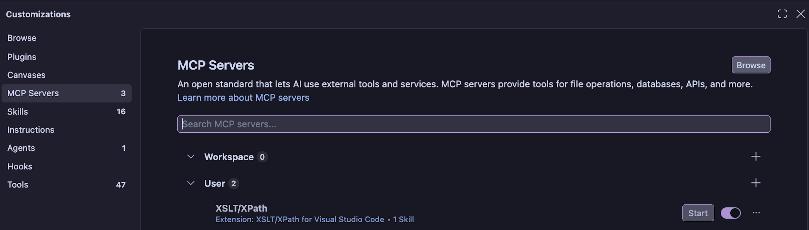

AI Assistants
AI coding assistants in Visual Studio Code - such as GitHub Copilot or Claude Code - can make good use of the XSLT/XPath extension. Most of what they use needs nothing special from it: the extension's problems, documentation notes and debugging output are all in forms that assistants read and write well. For more, the extension has an MCP server, so an assistant can ask it directly - for example, for the problems of a stylesheet that isn't open, where a function is declared, or what an XPath expression finds in your XML - and skills that tell the assistant how to use those tools well.
Fixing problems
The problems reported by the extension's linter are standard Visual
Studio Code diagnostics, shown in the Problems view with dx.xslt-xpath as their source, so it's clear
which extension reports them - in Visual Studio Code or an editor built on it. They identify the exact symbol at issue - an unresolved
variable, a function called with the wrong number of arguments, a record field that doesn't exist - so an
assistant that reads the diagnostics can explain and fix them precisely, and check its own changes the same way.
For example, GitHub Copilot can include the problems with #problems in a chat prompt, or fix a
problem from its Quick Fix menu, and Claude Code reads them through its Visual Studio Code integration.
The problems are kept up to date for every stylesheet open in an editor - not only the active one. An assistant usually changes files while your cursor is in another, so a stylesheet it changes is checked again, whether it's shown beside the active editor or in a tab that isn't shown, and the assistant sees the problems its change caused. When it changes several stylesheets at once, each is checked with its own declarations, XSLT version and imports, so no problems are reported that aren't there.
The MCP server
The extension can run a Model Context Protocol (MCP) server,
with tools an assistant can call to ask the extension about your stylesheets. The tools use the same code as
the editor - the linter, Go to Definition, Find All References and the XSLT Imports view - so their answers
match what you see, and they work for files that aren't open. The server is off by default: to turn it on, set
XSLT.mcp.enabled to true - see Settings. With
it on, the server starts with the window for a workspace that contains XSLT, XSpec or Schematron files, without
one being opened first - and for any other workspace, when an XML or XSLT file is opened.
| Tool | What it gives the assistant |
|---|---|
lint_file |
The problems in an XSLT module, XSpec file or Schematron schema - as the Problems view shows them, checked with its imports, includes and packages - whether or not it's open. Optionally, only those of a severity or worse. A module that another stylesheet imports or includes is checked with that top-level stylesheet's declarations too, as in the editor: the one found for it in the workspace, or one the assistant gives - for example, a stylesheet outside the workspace. |
lint_files |
The problems in each XSLT and XSpec file in a folder: a summary, then only the files with problems.
By default, warnings and errors - not hints, such as unused variables. Files in hidden folders, such as
.git, and those the files.exclude setting hides aren't checked. |
module_imports |
The tree of imports, includes and packages from a module's top-level stylesheet down, with the module marked - as in the XSLT Imports view. |
list_declarations |
Every function, named template, global variable and parameter, mode, key, attribute set,
accumulator, item type and character map a module can use: its own, then those of the modules and
packages it imports, includes or uses - each with its parameters and types, its location, and the
first line of its documentation, and one overridden by a higher import precedence marked. An
assistant calls it before writing or changing a stylesheet, to reuse what exists. Optionally, only
one kind; as for lint_file, the top-level stylesheet can be given. |
evaluate_xpath |
Evaluates an XPath expression on an XML file with your Saxon jar - the program behind
Find Nodes with XPath, in a process of its own - and gives the number
of items and the first 100 as the debugger shows values: a node as its path, a map or array in full.
An assistant uses it on a stylesheet's source XML to check its structure, a match pattern or a
select expression, before writing templates. XPath 4.0 by default, or 3.1 - with Saxon-HE,
which can't evaluate 4.0, 3.1 is used. It's evaluated as in a stylesheet, so a result isn't better than
the stylesheet's: unprefixed element names are in no namespace, whatever the document's default namespace
- unless the assistant gives the stylesheet's xpath-default-namespace, and an empty result
says when that may be why. The prefixes the document declares are bound. To use another prefix, the assistant
puts a declare namespace line for it at the very start, each ending in a semicolon:
declare namespace o = 'urn:orders'; declare namespace x = 'urn:x'; //o:order/x:ref. Those
lines are the only thing allowed before the XPath - it is XPath, not XQuery, so there is no
declare variable, declare function or default element namespace (the
xpathDefaultNamespace argument gives that). xs, fn,
map, array, math and err are predeclared (a stylesheet
has to declare map, array and math). Errors are given with Saxon's
code and position. Each node found is listed with the line and column where it starts in the XML file - from the
extension's own outline of it, as Find Nodes goes there, not Saxon's saxon:line-number(), which is
where the start tag ends. The saxon: extension functions need Saxon-PE or Saxon-EE, not Saxon-HE.
Needs the XSLT.tasks.saxonJar setting. Requests run one at a time, so an assistant that
sends several at once gets each answered, and an expression that takes more than 30 seconds is stopped
and reported as such.
What it can't do: for safety - an expression can otherwise run programs - it has no extension functions (calls to Java, or EXPath modules such as file:), no
collection() or uri-collection(), no http: addresses, and
doc() and unparsed-text() read only files in the workspace folders and beside the
XML file - not through a symbolic link out of them. The XML file's external entities aren't read. |
find_declaration |
Where a function, named template, global variable or parameter, mode, key, attribute set, accumulator,
item type or character map is declared, as seen from a module - with its parameters and types, and its
documentation: its documentation note, or a comment just before it.
When more than one module declares it, the one used, with the highest import precedence, is first.
As for lint_file, the assistant can give the top-level stylesheet the module is seen
from. |
find_references |
The references to one of these, as Find All References finds them - in the modules that use it and the XSpec files that test it - with each reference's line. The XSpec uses are listed last, as the tests, each with the scenario it's in. |
describe_type |
An XSLT 4.0 named item type: a record type's fields, with their types and @field
documentation, or an enumeration type's values - with a top-level stylesheet given, as for
find_declaration. |
xpath_function |
The signature and description of a built-in XPath or XSLT function, for XPath 3.1 or 4.0 - for a
function declared in a stylesheet, the assistant uses find_declaration. |
run_configuration |
How you run stylesheets: the Saxon jar, with its edition, version and licence, the XML catalog, the
XSpec installation and the XSLT packages - and for a stylesheet, its Quick Run: the XML context file,
the parameters, and the exact java command line, with the options the extension adds,
such as -catalog and -lib. An assistant that runs Saxon itself then gets
the same result as you. |
test_configuration |
For an XSpec file: the commands that run its tests, as the Test Explorer runs them - XSpec has no single
command here, as the tests are compiled to a test runner, which is then run, with more steps for the tests of a
Schematron schema. They have the options the extension works out - Saxon's syntax extensions, the XML catalog,
the packages for -lib and the Saxon settings of the stylesheet's task - and write to a folder in the
temporary files, not the project. The result also gives a command that summarises the test results as text - the
numbers passed, failed and pending, and each failure with what was expected and what the test gave - as the run
exits with 0 even when tests fail. It lists the file's scenarios. Like run_configuration, it runs
nothing: the assistant runs the commands. |
validation_configuration |
For a Schematron schema and the XML file it validates - the schema's XML context file, the one an
xml-model processing instruction names, or one the assistant gives: the command that validates it, as
Schematron: Validate does, in one run of Saxon with the schema compiled by SchXslt2, in a phase of the
schema's if the assistant chooses one. It writes the SVRL report to the temporary files, and gives a command that
summarises it as text - the failed assertions and successful reports, each with its role, location and message. A
location is an XPath for the XML file, which evaluate_xpath turns into a line and column. It runs
nothing: the assistant runs the command. |
The tools only read files: they don't change them, or run stylesheets, tests or validations - an assistant runs the
commands that run_configuration, test_configuration and validation_configuration
give itself, if you allow it. evaluate_xpath only
evaluates an expression on an XML file.
GitHub Copilot
With the server on, Copilot finds it by itself: its tools are listed with the other MCP tools in Copilot
Chat's agent mode. There's no need to add it to an mcp.json file - it would then be listed
twice, and with a token that XSLT: Reset MCP Server Token would make out of date.
Visual Studio Code's MCP: List Servers command lists the server as XSLT/XPath: choose it to start, stop or restart it, to see its tools, or to show its output. The first time it starts, Visual Studio Code may ask you to trust it. When a new release of the extension adds tools, Visual Studio Code finds them the next time the server starts. The server also gives Copilot the skills.
Visual Studio Code's Customizations editor - the Chat: Configure Custom Agents... command - shows what Copilot has from the server. Its MCP Servers tab lists the server as XSLT/XPath, from this extension, with the number of skills it provides (once the server has been started), and a Start button and a switch for the server - Visual Studio Code's own controls, as in MCP: List Servers. Its Skills tab lists the skills under the server. The command is part of GitHub Copilot's chat: it's there when GitHub Copilot is enabled, as it is by default in Visual Studio Code, and not otherwise.

Claude Code
Run XSLT: Set Up MCP Server for Claude Code from the Command Palette - it offers to turn the
server on, if it isn't, and asks whether to set it up for this project - recommended, with a window for each
project - or for all your projects, which then use this window's server. Run it in each project's window. It runs
Claude Code's claude mcp add command for you. A Claude Code session started after that can use
the tools, whether it runs in Visual Studio Code or in a terminal of its own. A session already running keeps
the settings it started with, so /mcp doesn't connect it: start a new one - in Visual Studio
Code, a new conversation in the Claude panel.
If the claude command isn't found - for example, it isn't on the path Visual Studio Code
uses - the claude mcp add command is copied instead: run it in a terminal - for one project, in
that project's folder.
In a workspace with several folders, choose the folder that Claude Code is started in. The server can see
all the folders, and the tools' relative paths - and the paths they show - are from that folder, not the
workspace's first. The set-up is for one folder: to use Claude Code in another folder of the workspace, run
the command again and choose it. A folder added to the workspace later needs the same - the server itself
doesn't change. The assistant is told the paths of the workspace's folders when it connects - and
run_configuration lists them - so it can check a file in any of them.
Skills
The extension has three skills: sets of instructions an assistant loads when a task needs them. They tell the assistant how to use the tools above together:
xslt-xpath, for writing XSLT and XPath: find the XSLT version and never raise it, and look up what a module already declares before writing a second copy of a function (list_declarations); try an XPath expression on the stylesheet's source XML (evaluate_xpath) - including how it differs from a stylesheet's: the default namespace, and themap,arrayandmathprefixes a stylesheet has to declare; check each change withlint_file, read warnings that come from imports it can't resolve, and not make a package component public just to silence an error; run the stylesheet with the command fromrun_configuration, rather than a Saxon command of its own; and the habits that avoid common errors - such as writing<for<in XPath in an attribute, and a global variable that uses the context item, which the linter can't report.xspec-testing, for XSpec tests: write scenarios for a function, a named template or a template rule, withselectas the expected value andtestfor a condition on$x:result; test a package withrun-as="external"or anx:helper; run the tests with the commandstest_configurationgives, and read the summary - not the exit code; and when a test fails, decide whether the stylesheet or the expectation is wrong, and not change an expectation just to make it pass.schematron, for Schematron schemas: write rules the way SchXslt2 runs them - the first matching rule of a pattern, the prefixessch:nsdeclares, only the XSLT declarations it copies; check each change withlint_file; validate with the commandvalidation_configurationgives; and find each problem's line withevaluate_xpath.
All three tell the assistant to say afterwards what it linted, ran and tested. How the assistant gets them depends on the assistant:
- GitHub Copilot, in Visual Studio Code 1.147 or later - the server serves the skills itself, as
skills over MCP (a Beta extension of the
protocol), so there is nothing to install and they are always the versions that go with the server's tools.
Visual Studio Code may ask you to allow the skills into the model's context the first time it connects to the
server. They are listed under the server on the Skills tab of the Customizations editor
once Visual Studio Code has started the server - which it does when you use Copilot chat, or press the server's
Start button - so after a reload they aren't listed until then. To turn off skills
from all MCP servers, use Visual Studio Code's
chat.agentHost.mcpSkills.enabledsetting. In an earlier version of Visual Studio Code, Copilot still has all the server's tools, but not the skills. - Claude Code - XSLT: Set Up MCP Server for Claude Code also installs the skills
in
~/.claude/skills(or in the folderCLAUDE_CONFIG_DIRnames) - for all your projects, as they only apply where the server is connected. They are kept up to date with the extension: each time the server starts, a copy the extension installed is replaced by the new version. A copy you have edited, or a skill of that name that came from elsewhere, is left as it is - to keep your changes, edit a copy under another name. A skill that a later version of the extension adds is installed when you run the set-up command again. - Other assistants - those that support skills over MCP get them from the server in the same way; the others get the tools without the skills.
Security
The server only accepts connections from your own computer (127.0.0.1), and each request needs
a token that the extension makes once and keeps in Visual Studio Code's secret storage - it doesn't expire.
Claude Code keeps the token in its own settings; a copied claude mcp add command includes it, so
keep the command private. To make a new token - for example, if the old one has been shared - run
XSLT: Reset MCP Server Token. Copilot uses the new token straight away, and Claude Code is
set up again with it - for all projects, or for a project in the workspace - where it was set up with the
old one. A Claude Code session already running keeps the old token: start a new one.
Each Visual Studio Code window has a server of its own, for its workspace, so with a window
for each project, an assistant started in a project's folder uses that project's window. Its tools work
best for the files of that workspace: a relative path is taken from its first folder, and a module's
top-level stylesheet is found from the workspace's modules. A window's port is the same each time its
workspace is opened - one of the 999 after XSLT.mcp.port (6745 by default), chosen for the
workspace, or the next free one if another program has it; if it ever changes, Claude Code set up for the
project is set up again with it. A window with no folder open uses XSLT.mcp.port itself. The
XSLT MCP Server output channel shows each window's address, or why its server didn't
start.
Documentation notes
XSLT 4.0 documentation notes - xsl:note format="xdoc-md" - use
Markdown with @param and @return tags, in the style of Javadoc: a format that
assistants already know. An assistant can read a function's note to understand it, and can write notes too - for
example, when asked to document the functions in a stylesheet. As the extension checks the
@param tags against the parameters, a missing or misnamed parameter in a note is reported
straight away.
Debugging output
The output of xdm:debug() in xsl:message is plain, labelled
text: each variable's value in XPath syntax, with its type where it isn't obvious, and each node with its
path. Copied from the terminal into a chat, it gives an assistant the actual values to reason about, rather than
a description of the problem.
Running XSLT
Quick Run creates ordinary tasks in the workspace's tasks.json
file, and each task shows the Saxon command line it runs in the terminal. An assistant that can run commands
can run a transform in the same way.
The Agents window
Visual Studio Code's Agents window, for running agent sessions and reviewing their changes, only runs the extensions on a list chosen by Microsoft, and the XSLT/XPath extension isn't on it yet. Without the extension, XSLT files in the Agents window have plain XML highlighting, with none of the extension's features - and if Red Hat's XML extension is installed, it may report errors against its XSLT 3.0 schema. To run the extension in the Agents window, add this to your user settings - see Settings:
"extensions.supportAgentsWindow": { "deltaxml.xslt-xpath": true }
Current limitations
The MCP server's tools only read files: an assistant can't ask the extension to run a stylesheet, an XSpec test or a
Schematron validation. It can run the commands that run_configuration,
test_configuration and validation_configuration give - and the skills tell it to - with
the permission your assistant asks of you for a command. An XPath expression it can evaluate with
evaluate_xpath, within the limits described there.
In the Problems view, problems are only shown for files open in an editor, as by most language extensions:
a stylesheet an assistant changes that isn't open has none there until it's opened. With the MCP server on, an
assistant can check such a file with lint_file.